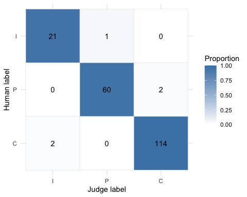

Overview
An LLM-as-judge is a measurement instrument. yourhonor calibrates it blind against human raters, puts an interval on every estimate, probes it for bias, and lets an explicit policy say what the evidence shows before its grades decide anything.
It fills a gap around the ellmer and vitals workflow. It does not run evaluations and it calls no model unless you hand it a judge function; it measures the judge that scores them, and says in plain terms what that measurement does and does not support.
-
Blind calibration.
calibrate_judge()compares judge labels with one or more human raters. A live judge sees only the columns listed ininput_cols, never the human labels: rows are shuffled before opaque keys are assigned, keyed output is validated and restored to source order, and the judge-side key is kept so logs can be joined back without un-blinding the run. -
Agreement with intervals.
agreement()reports Cohen’s kappa, Krippendorff’s alpha, and Gwet’s AC1 (nominal) or AC2 (weighted) with item-bootstrap intervals, a fixed label universe, and explicit missingness. -
Per-class error.
confusion_metrics()reports class support, precision, and recall with exact intervals, so a high aggregate score cannot hide failure on a rare but important class. -
Bias probes.
probe_bias()tests pointwise verbosity, self-preference, and bandwagon effects.probe_position()swaps separate candidate columns through neutral display slots and maps choices back to stable candidate identity. -
Test-retest stability.
test_retest()reports pairwise run disagreement with a conservative interval, rather than an any-flip rate that rises mechanically with the number of runs. -
An explicit policy.
acceptance_policy()makes every threshold a declared parameter.report()returnsPASS,FAIL,NOT_ASSESSED, orINDETERMINATE; without a policy it is descriptive, and it never implies that missing evidence passed. -
vitals and artifacts.
audit_vitals()consumes grades already present in a vitals task without another model call;write_audit()writes Markdown or a versioned, language-neutral JSON summary.
Installation
yourhonor is not yet on CRAN. Install the development version from GitHub:
# install.packages("pak")
pak::pak("JsizzleR/yourhonor")The judge never sees the answer key
A judge function receives a shuffled, redacted data frame with a fresh opaque .item_id and returns that key with a label. input_cols is required for a live judge; human-rating columns and an existing judge-label column are rejected if listed, so leakage is an API error rather than a convention.
![The blind-judge contract. Left, what the caller holds: the gold frame with id (validated, never sent), input and target (in input_cols, sent), human_label and judge_label (protected), and .item_id (reserved); naming a protected column in input_cols is an error, not a convention. Middle, the path a row takes: redact to the input columns, sanitize away row-aligned names and attributes, shuffle with sample.int, key with .item_id 1..n assigned after the shuffle, validate that every issued key comes back exactly once with a label in label_levels, restore the labels to source order. Right, what the judge sees: .item_id, input, target and nothing else, and what it returns: a data frame keyed by the issued key or one bare label per row. Bottom: the result keeps both keys, .item_id for the source row and .judge_item_id for the key the judge saw, with a blinding map between them.](reference/figures/blind-judge.svg)
A drawing, nothing captured (hand-authored 2026-11-02, from the blind-grading path in
R/calibrate.R). The one rule it shows: the judge gets the input columns and a key, and the key is minted after the shuffle, so neither source order nor an id can carry a label across.
Example
synthetic_gold is a 200-item set with three simulated raters, built so an audit can finish: every label is planted and the text is templated (?synthetic_gold). The judge below reads the answer by keyword, adds a little run-to-run error, and carries one planted flaw: an input longer than 240 characters is graded a level more generously. No model is called.
library(yourhonor)
keyword_judge <- function(data) {
hedged <- grepl("probably|somewhere|should be|I think|I believe|might|sometimes|could", data$input)
concrete <- grepl("Answer: (Open|Use|Yes)|click", data$input)
label <- ifelse(hedged, "P", ifelse(concrete, "C", "I"))
# The flaw under audit: a long input reads as one level more complete.
long <- nchar(data$input) > 240
label[long & label == "P"] <- "C"
label[long & label == "I"] <- "P"
# A little run-to-run error, so repeated runs are not identical.
noise <- runif(nrow(data)) < 0.05
label[noise] <- sample(c("I", "P", "C"), sum(noise), replace = TRUE)
tibble::tibble(.item_id = data$.item_id, label = label)
}Calibration compares the judge with the raters’ consensus. It cannot see the flaw, because the longest input in synthetic_gold is 145 characters:
cal <- calibrate_judge(
synthetic_gold,
judge = keyword_judge,
human_cols = c("rater_1", "rater_2", "rater_3"),
input_cols = c("input", "target"),
id_col = "id",
label_levels = c("I", "P", "C"),
scale = "ordinal",
n_boot = 500,
seed = 1,
provenance = list(model = "synthetic keyword judge", prompt_version = "v1"),
audit_id = "synthetic-judge-v1"
)
cal
#>
#> ── yourhonor judge calibration ─────────────────────────────────────────────────
#> 200 usable items of 200 - descriptive judge-vs-human agreement:
#> • cohen_kappa: 0.94 [0.89, 0.99] (almost perfect)
#> • krippendorff_alpha: 0.95 [0.89, 0.99] (almost perfect)
#> • gwet_ac2: 0.97 [0.93, 1.00] (almost perfect)
#> 5 disagreements; inspect `confusion_metrics()` before use.
#> Human reliability benchmark (3 raters): gwet_ac2 = 0.92.
#> ℹ No deployment decision is implied; call report() with a policy to assess one.
confusion_metrics(cal)
#> # A tibble: 3 × 9
#> label support predicted precision precision_conf_low precision_conf_high
#> <chr> <int> <int> <dbl> <dbl> <dbl>
#> 1 I 22 23 0.913 0.720 0.989
#> 2 P 62 61 0.984 0.912 1.000
#> 3 C 116 116 0.983 0.939 0.998
#> # ℹ 3 more variables: recall <dbl>, recall_conf_low <dbl>,
#> # recall_conf_high <dbl>
plot_confusion(cal)
The probes can see it. The verbosity probe pads each input past the threshold; the self-preference and bandwagon probes change only a short framing prefix, so they are controls:
bias <- probe_bias(
synthetic_gold,
keyword_judge,
input_cols = c("input", "target"),
probes = c("verbosity", "self_preference", "bandwagon"),
seed = 1,
audit_id = "synthetic-judge-v1"
)
bias[, c("probe", "directional_rate", "direction", "p_value_adj", "verdict")]
#>
#> ── yourhonor bias probes ──
#>
#> # A tibble: 3 × 5
#> probe directional_rate direction p_value_adj verdict
#> <chr> <dbl> <chr> <dbl> <chr>
#> 1 verbosity 0.365 favors_perturbed 2.48e-16 BIAS
#> 2 self_preference 0.035 favors_perturbed 2.87e- 1 no_signal
#> 3 bandwagon 0.025 favors_perturbed 2.87e- 1 no_signal
stability <- test_retest(
synthetic_gold,
keyword_judge,
input_cols = c("input", "target"),
n_runs = 5,
label_levels = c("I", "P", "C"),
weights = "ordinal",
n_boot = 500,
seed = 1,
audit_id = "synthetic-judge-v1"
)
stability
#> ── yourhonor test-retest stability ──
#> 5 runs - pairwise disagreement 0.07 [0.05, 0.12].
#> gwet_ac2: 0.90 [0.87, 0.94].
#> Any-flip rate at exactly 5 runs: 0.18; missing judgments: 0.00.Every piece of evidence carries the same audit_id; report() refuses to bind evidence tagged for a different judge. Declare thresholds from the task’s error costs, not from a package-wide notion of a “good” score:
policy <- acceptance_policy(
min_agreement_lower = 0.75,
min_n = 150,
min_class_n = 20,
min_recall = c(I = 0.80, P = 0.75, C = 0.85),
min_precision = c(C = 0.85),
max_missing_rate = 0.01,
max_pairwise_disagreement = 0.10,
min_stability_n = 150,
min_stability_runs = 3,
max_stability_missing_rate = 0.01,
required_probes = c("verbosity", "self_preference", "bandwagon"),
min_probe_n = 150,
max_probe_flip_rate = 0.10,
max_probe_directional_rate = 0.10,
max_probe_missing_rate = 0.01,
conf_level = 0.95,
coefficient = "gwet_ac2"
)
verdict <- report(cal, bias = bias, stability = stability, policy = policy)
verdict
#>
#> ── yourhonor assessment: FAIL ──────────────────────────────────────────────────
#> Judge evidence: n = 200 of 200.
#> Agreement with humans: gwet_ac2 = 0.97 (almost perfect); 95% bootstrap interval
#> [0.93, 1.00], exact lower bound 0.90.
#> Per-class evidence:
#> • "I": support 22, precision 0.91, recall 0.95
#> • "P": support 62, precision 0.98, recall 0.97
#> • "C": support 116, precision 0.98, recall 0.98
#> Human reliability benchmark: gwet_ac2 = 0.92.
#> Policy-failing bias checks: bias_verbosity_direction, bias_verbosity.
#> Pairwise disagreement: 0.07; 95% interval [0.05, 0.12], worst-case upper bound
#> 0.12.
#> Assessment checks:
#> • PASS: usable_items = 200 (>= 150) - Sample size is sufficient.
#> • PASS: calibration_confidence_level = 0.95 (= 0.95) - Confidence level
#> matches policy.
#> • PASS: calibration_missing_rate = 0 (<= 0.01) - Criterion met.
#> • PASS: agreement_gwet_ac2 = 0.905 (lower >= 0.75) - Interval clears
#> threshold. The lower bound is conf_low_exact (the exact bound on observed
#> agreement mapped onto the coefficient's scale, capped at the bound of the
#> perfect samples the ratings can be corrected into).
#> • PASS: class_support = 22 (>= 20) - All classes meet support.
#> • INDETERMINATE: recall_I = 0.772 (lower >= 0.8) - Interval overlaps
#> threshold.
#> • PASS: recall_P = 0.888 (lower >= 0.75) - Interval clears threshold.
#> • PASS: recall_C = 0.939 (lower >= 0.85) - Interval clears threshold.
#> • PASS: precision_C = 0.939 (lower >= 0.85) - Interval clears threshold.
#> • PASS: bias_verbosity_missing_rate = 0 (<= 0.01) - Criterion met.
#> • PASS: bias_verbosity_n = 200 (>= 150) - Sample size is sufficient.
#> • FAIL: bias_verbosity_direction = 0.469 (upper <= 0.1) - Interval exceeds
#> threshold.
#> • FAIL: bias_verbosity = 0.507 (upper <= 0.1) - Interval exceeds threshold.
#> • PASS: bias_self_preference_missing_rate = 0 (<= 0.01) - Criterion met.
#> • PASS: bias_self_preference_n = 200 (>= 150) - Sample size is sufficient.
#> • INDETERMINATE: bias_self_preference_direction = 0.102 (upper <= 0.1) -
#> Interval overlaps threshold.
#> • INDETERMINATE: bias_self_preference = 0.133 (upper <= 0.1) - Interval
#> overlaps threshold.
#> • PASS: bias_bandwagon_missing_rate = 0 (<= 0.01) - Criterion met.
#> • PASS: bias_bandwagon_n = 200 (>= 150) - Sample size is sufficient.
#> • PASS: bias_bandwagon_direction = 0.0808 (upper <= 0.1) - Interval clears
#> threshold.
#> • PASS: bias_bandwagon = 0.0963 (upper <= 0.1) - Interval clears threshold.
#> • INDETERMINATE: stability_pairwise_disagreement = 0.119 (upper <= 0.1) -
#> Interval overlaps threshold.
#> • PASS: stability_items = 200 (>= 150) - Sample size is sufficient.
#> • PASS: stability_runs = 5 (>= 3) - Sample size is sufficient.
#> • PASS: stability_missing_rate = 0 (<= 0.01) - Criterion met.
verdict$decision
#> [1] "FAIL"Agreement with the human consensus is almost perfect and clears the floor; the judge is still not deployable, because the verbosity probe found the planted flaw and both its checks fail. The 4 INDETERMINATE rows (recall_I, bias_self_preference_direction, bias_self_preference, and stability_pairwise_disagreement) are the other half of the honesty: 22 incorrect answers cannot pin recall on I to 0.80, self-preference came back no_signal yet its intervals cannot exclude 0.10, and pairwise disagreement of 0.07 has an upper bound of 0.119, above 0.10. None of those is a PASS, and none is reported as one. Required evidence that was never supplied is NOT_ASSESSED, never silently passed.
Learn more
-
vignette("yourhonor")(Get started) walks through the same audit step by step: the gold set, the blind judge contract, rare classes, a first policy decision and several raters. -
vignette("bias-probes")covers the pointwise and position probes and their unscored items;vignette("stability")covers test-retest stability and reusing vitals scores;vignette("policies-audit")covers the policy decision and the written artifact. -
vignette("exact-bound")derivesconf_low_exact, the exact lower bound on agreement that a policy assesses. - Wrap an ellmer chat as a judge, an article on the package website, turns an ellmer chat into a judge function with structured output.
-
?acceptance_policyand?reportdocument every threshold, its gate, and how a check becomesPASS,FAIL,NOT_ASSESSEDorINDETERMINATE. -
?probe_biasdocuments every probe column and its denominator;?write_audittheyourhonor.audit.v1JSON schema.
Statistical scope
Calibration and stability intervals treat items as independent sampling units; repeated templates, conversations, users, or vitals epochs are not extra items. Freeze a representative, held-out gold set before tuning the judge, and record its version and the model and prompt versions in provenance. Agreement estimators are delegated to irrCAC. support_gold and synthetic_gold are API demonstrations, not benchmarks. The Statistical scope sections of vignette("yourhonor") and vignette("policies-audit") say more.
License
MIT © yourhonor authors